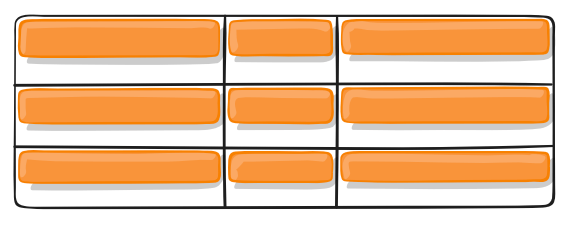
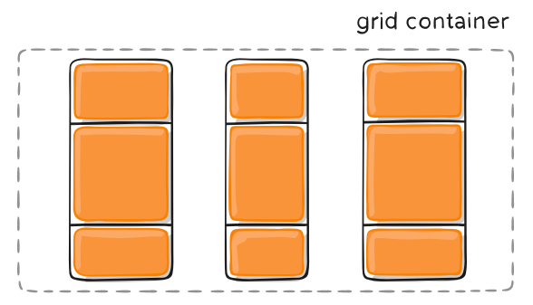

CSS-GRID网格布局教程
Table of Contents
- 一、概述
- 二、基本概念
- 三、容器属性
- 四、项目属性
- 五、参考链接
一、概述
网格布局（Grid）是最强大的 CSS 布局方案。
它将网页划分成一个个网格，可以任意组合不同的网格，做出各种各样的布局。以前，只能通过复杂的 CSS 框架达到的效果，现在浏览器内置了。

上图这样的布局，就是 Grid 布局的拿手好戏。
Grid 布局与 Flex 布局有一定的相似性，都可以指定容器内部多个项目的位置。但是，它们也存在重大区别。
Flex 布局是轴线布局，只能指定"项目"针对轴线的位置，可以看作是一维布局。Grid 布局则是将容器划分成"行"和"列"，产生单元格，然后指定"项目所在"的单元格，可以看作是二维布局。Grid 布局远比 Flex 布局强大。
二、基本概念
2.1 容器和项目
采用网格布局的区域，称为"容器"（container）。容器内部采用网格定位的子元素，称为"项目"（item）。
<div> <div><p>1</p></div> <div><p>2</p></div> <div><p>3</p></div> </div>
上面代码中，最外层的 <div> 元素就是容器，内层的三个 <div> 元素就是项目。
注意：项目只能是容器的顶层子元素，不包含项目的子元素，比如上面代码的 <p> 元素就不是项目。Grid 布局只对项目生效。
2.2 行和列
容器里面的水平区域称为"行"（row），垂直区域称为"列"（column）。

上图中，水平的深色区域就是"行"，垂直的深色区域就是"列"。
2.3 单元格
行和列的交叉区域，称为"单元格"（cell）。
正常情况下，n 行和 m 列会产生 \(n \times m\) 个单元格。比如，3 行 3 列会产生 9 个单元格。
2.4 网格线
划分网格的线，称为"网格线"（grid line）。水平网格线划分出行，垂直网格线划分出列。
正常情况下，n 行有 n + 1 根水平网格线，m 列有 m + 1 根垂直网格线，比如三行就有四根水平网格线。

上图是一个 4 x 4 的网格，共有 5 根水平网格线和 5 根垂直网格线。
三、容器属性
Grid 布局的属性分成两类。一类定义在容器上面，称为容器属性；另一类定义在项目上面，称为项目属性。这部分先介绍容器属性。
3.1 display
<!DOCTYPE html> <html> <head> <meta charset="utf-8"> <meta name="viewport" content="width=device-width"> <title>JS Bin</title> </head> <body> <span>foo</span> <div id="container"> <div class="item item-1">1</div> <div class="item item-2">2</div> <div class="item item-3">3</div> <div class="item item-4">4</div> <div class="item item-5">5</div> <div class="item item-6">6</div> <div class="item item-7">7</div> <div class="item item-8">8</div> <div class="item item-9">9</div> </div> <span>bar</span> </body> </html>
span { font-size: 2em; } #container{ display: grid; grid-template-columns: 50px 50px 50px; grid-template-rows: 50px 50px 50px; } .item { font-size: 2em; text-align: center; border: 1px solid #e5e4e9; } .item-1 { background-color: #ef342a; } .item-2 { background-color: #f68f26; } .item-3 { background-color: #4ba946; } .item-4 { background-color: #0376c2; } .item-5 { background-color: #c077af; } .item-6 { background-color: #f8d29d; } .item-7 { background-color: #b5a87f; } .item-8 { background-color: #d0e4a9; } .item-9 { background-color: #4dc7ec; }
display: grid 指定一个容器采用网格布局。
默认情况下，容器元素都是块级元素，但也可以设成行内元素。
#container{ display: inline-grid; grid-template-columns: 50px 50px 50px; grid-template-rows: 50px 50px 50px; }
上面代码指定 #container 是一个行内元素，该元素内部采用网格布局。
注意，设为网格布局以后，容器子元素（项目）的 float 、 display: inline-block 、 display: table-cell 、 vertical-align 和 column-* 等设置都将失效。
3.2 grid-template-columns，grid-template-rows
容器指定了网格布局以后，接着就要划分行和列。 grid-template-columns 属性定义每一列的列宽， grid-template-rows 属性定义每一行的行高。
.container { display: grid; grid-template-columns: 100px 100px 100px; grid-template-rows: 100px 100px 100px; }
除了使用绝对单位，也可以使用百分比。
.container { display: grid; grid-template-columns: 33.33% 33.33% 33.33%; grid-template-rows: 33.33% 33.33% 33.33%; }
1) repeat()
有时候，重复写同样的值非常麻烦，尤其网格很多时。这时，可以使用 repeat() 函数，简化重复的值。上面的代码用 repeat() 改写如下。
#container { display: grid; grid-template-columns: repeat(3, 33.33%); grid-template-rows: repeat(3, 33.33%); }
repeat() 接受两个参数，第一个参数是重复的次数（上例是3），第二个参数是所要重复的值。
repeat() 重复某种模式也是可以的。
#container{ display: grid; grid-template-columns: repeat(2, 100px 20px 80px); grid-template-rows: repeat(3, 100px); }
上面代码定义了 6 列，第一列和第四列的宽度为 100px，第二列和第五列为 20px，第三列和第六列为 80px。
2) auto-fill 关键字
有时，单元格的大小是固定的，但是容器的大小不确定。如果希望每一行（或每一列）容纳尽可能多的单元格，这时可以使用 auto-fill 关键字表示自动填充。
#container{ display: grid; width: 550px; grid-template-columns: repeat(auto-fit, 100px); grid-template-rows: repeat(3, 100px); }
上面代码表示每列宽度 100px，然后自动填充，直到容器不能放置更多的列。
3) fr 关键字
为了方便表示比例关系，网格布局提供了 fr 关键字（fraction 的缩写，意为"片段"）。如果两列的宽度分别为 1fr 和 2fr ，就表示后者是前者的两倍。
.container { display: grid; width: 550px; grid-template-columns: 1fr 1fr; }
上面代码表示两个相同宽度的列。
fr 可以与绝对长度的单位结合使用，这时会非常方便。
#container { display: grid; width: 550px; grid-template-columns: 150px 1fr 2fr; }
上面代码表示，第一列的宽度为 150 像素，第二列的宽度是第三列的一半。
4) minmax()
minmax() 函数产生一个长度范围，表示长度就在这个范围之中。它接受两个参数，分别为最小值和最大值。
grid-template-columns: 1fr 2fr minmax(100px, 1fr);
上面代码中， minmax(100px, 1fr) 表示列宽不小于 100px，不大于 1fr。
5) auto 关键字
auto 关键字表示由浏览器自己决定长度。
grid-template-columns: 100px auto 100px;
上面代码中，第二列的宽度，基本上等于该列单元格的最大宽度，除非单元格内容设置了 min-width ，且这个值大于最大宽度。
6) 网格线的名称
grid-template-columns 属性和 grid-template-rows 属性里面，还可以使用方括号，指定每一根网格线的名字，方便以后的引用。
#container { display: grid; grid-template-columns: [c1] 100px [c2] 100px [c3] auto [c4]; grid-template-rows: [r1] 100px [r2] 100px [r3] auto [r4]; }
上面代码指定网格布局为 3 行 x 3 列，因此有 4 根垂直网格线和 4 根水平网格线。方括号里面依次是这八根线的名字。
网格布局允许同一根线有多个名字，比如 [fifth-line row-5] 。
7) 布局实例
grid-template-columns 属性对于网页布局非常有用，两栏式布局只需要一行代码。
#wrapper { display: grid; grid-template-columns: 70% 30%; }
上面代码将左边栏设为 70%，右边栏设为 30%。
传统的十二网格布局，写起来也很容易。
grid-template-columns: repeat(12, 1fr);
3.3 grid-row-gap，grid-column-gap，grid-gap
grid-row-gap 属性设置行与行的间隔（行间距）， grid-column-gap 属性设置列与列的间隔（列间距）。
#container { display: grid; width: 350px; grid-template-columns: 1fr 1fr 1fr; grid-row-gap: 20px; grid-column-gap: 20px; }
上面代码中， grid-row-gap 用于设置行间距， grid-column-gap 用于设置列间距。
grid-gap 属性是 grid-column-gap 和 grid-row-gap 的合并简写形式，语法如下。
grid-gap: <grid-row-gap> <grid-column-gap>;
因此，上面一段 CSS 代码等同于下面的代码。
#container { display: grid; width: 350px; grid-template-columns: 1fr 1fr 1fr; grid-gap: 20px 20px; }
如果 grid-gap 省略了第二个值，浏览器认为第二个值等于第一个值。
根据最新标准，上面三个属性名的 grid- 前缀已经删除， grid-column-gap 和 grid-row-gap 写成 column-gap 和 row-gap ， grid-gap 写成 gap 。
3.4 grid-template-areas
网格布局允许指定"区域"（area），一个区域由单个或多个单元格组成。 grid-template-areas 属性用于定义区域。
#container { display: grid; grid-template-columns: 100px 100px 100px; grid-template-rows: 100px 100px 100px; grid-template-areas: 'a b c' 'd e f' 'g h i'; }
上面代码先划分出 9 个单元格，然后将其定名为 a 到 i 的九个区域，分别对应这九个单元格。
多个单元格合并成一个区域的写法如下。
grid-template-areas: 'a a a' 'b b b' 'c c c';
上面代码将 9 个单元格分成 a、b、c 三个区域。
下面是一个布局实例：
<!DOCTYPE html> <html lang="en"> <head> <meta charset="UTF-8"> <meta http-equiv="X-UA-Compatible" content="IE=edge"> <meta name="viewport" content="width=device-width, initial-scale=1.0"> <link rel="stylesheet" href="./style.css"> <title>Document</title> </head> <body> <div id="container"> <header>Header</header> <nav>Navigation</nav> <main>Main area</main> <footer>Footer</footer> </div> </body> </html>
#container { display: grid; grid-template-columns: 100px 100px 100px; grid-template-rows: 100px 100px 100px; grid-template-areas: "header header header" "nav main main" "nav footer footer"; } #container > header { grid-area: header; background-color: #f8d29d; } #container > nav { grid-area: nav; background-color: #b5a87f; } #container > main { grid-area: main; background-color: #d0e4a9; } #container > footer { grid-area: footer; background-color: #4dc7ec; }
上面代码中，顶部是页眉区域 header ，底部是页脚区域 footer ，中间部分则为 main 和 sidebar 。
如果某些区域不需要利用，则使用"点"（.）表示。
grid-template-areas: "header header header" "nav main ." "nav footer .";
注意，区域的命名会影响到网格线。每个区域的起始网格线，会自动命名为区域名
-start，终止网格线自动命名为区域名-end。
比如，区域名为
header，则起始位置的水平网格线和垂直网格线叫做header-start，终止位置的水平网格线和垂直网格线叫做header-end。
3.5 grid-auto-flow
划分网格以后，容器的子元素会按照顺序，自动放置在每一个网格。默认的放置顺序是"先行后列"，即先填满第一行，再开始放入第二行，这个顺序由 grid-auto-flow 属性决定，默认值是 row ，即"先行后列"。也可以将它设成 column ，变成"先列后行"。
grid-auto-flow: column;
grid-auto-flow 属性除了设置成 row 和 column ，还可以设成 row dense 和 column dense 。这两个值主要用于，某些项目指定位置以后，剩下的项目怎么自动放置。
下面的例子让1号项目和2号项目各占据两个单元格，然后在默认的 grid-auto-flow: row 情况下，会产生下面这样的布局。
#container { display: grid; grid-template-columns: 100px 100px 100px; grid-template-rows: 100px 100px 100px; grid-auto-flow: row; } .item-1 { background-color: #ef342a; grid-column-start: 1; grid-column-end: 3; } .item-2 { background-color: #f68f26; grid-column-start: 1; grid-column-end: 3; }
上图中，1 号项目后面的位置是空的，这是因为 3 号项目默认跟着 2 号项目，所以会排在 2 号项目后面。
现在修改设置，设为 row dense ，表示"先行后列"，并且尽可能紧密填满，尽量不出现空格。
#container { display: grid; grid-template-columns: 100px 100px 100px; grid-template-rows: 100px 100px 100px; grid-auto-flow: row dense; }
上图会先填满第一行，再填满第二行，所以 3 号项目就会紧跟在 1 号项目的后面。8 号项目和 9 号项目就会排到第四行。
如果将设置改为 column dense ，表示"先列后行"，并且尽量填满空格。
#container { display: grid; width: 450px; grid-template-columns: 100px 100px 100px; grid-template-rows: 100px 100px 100px; grid-auto-flow: column dense; }
上图会先填满第一列，再填满第2列，所以3号项目在第一列，4 号项目在第二列。8 号项目和 9 号项目被挤到了第四列。
3.6 justify-items，align-items，place-items
justify-items 属性设置单元格内容的水平位置（左中右）， align-items 属性设置单元格内容的垂直位置（上中下）。
#container { justify-items: start | end | center | stretch; align-items: start | end | center | stretch; }
这两个属性的写法完全相同，都可以取下面这些值。
start：对齐单元格的起始边缘。 end：对齐单元格的结束边缘。 center：单元格内部居中。 stretch：拉伸，占满单元格的整个宽度（默认值）。
justify-items: start
上面代码表示，单元格的内容左对齐，效果如下图。

align-items: start
上面代码表示，单元格的内容头部对齐，效果如下图。

place-items 属性是 align-items 属性和 justify-items 属性的合并简写形式。
place-items: <align-items> <justify-items>;
下面是一个例子。
place-items: start end;
如果省略第二个值，则浏览器认为与第一个值相等。
3.7 justify-content，align-content，place-content
justify-content 属性是整个内容区域在容器里面的水平位置（左中右）， align-content 属性是整个内容区域的垂直位置（上中下）。
#container { justify-content: start | end | center | stretch | space-around | space-between | space-evenly; align-content: start | end | center | stretch | space-around | space-between | space-evenly; }
这两个属性的写法完全相同，都可以取下面这些值。（下面的图都以 justify-content 属性为例， align-content 属性的图完全一样，只是将水平方向改成垂直方向。）
start - 对齐容器的起始边框

end - 对齐容器的结束边框

center - 容器内部居中

stretch - 项目大小没有指定时，拉伸占据整个网格容器。

space-around - 每个项目两侧的间隔相等。所以，项目之间的间隔比项目与容器边框的间隔大一倍。

space-between - 项目与项目的间隔相等，项目与容器边框之间没有间隔。

space-evenly - 项目与项目的间隔相等，项目与容器边框之间也是同样长度的间隔。

place-content 属性是 align-content 属性和 justify-content 属性的合并简写形式。
place-content: <align-content> <justify-content>
下面是一个例子。
place-content: space-around space-evenly;
如果省略第二个值，浏览器就会假定第二个值等于第一个值。
3.8 grid-auto-columns，grid-auto-rows
有时候，一些项目的指定位置，在现有网格的外部。比如网格只有 3 列，但是某一个项目指定在第 5 行。这时，浏览器会自动生成多余的网格，以便放置项目。
grid-auto-columns 属性和 grid-auto-rows 属性用来设置，浏览器自动创建的多余网格的列宽和行高。它们的写法与 grid-template-columns 和 grid-template-rows 完全相同。如果不指定这两个属性，浏览器完全根据单元格内容的大小，决定新增网格的列宽和行高。
下面的例子里面，划分好的网格是 3 行 x 3 列，但是，8 号项目指定在第 4 行，9 号项目指定在第 5 行。
#container { display: grid; grid-template-columns: 100px 100px 100px; grid-template-rows: 100px 100px 100px; grid-auto-rows: 50px; } .item-8 { background-color: #d0e4a9; grid-row-start: 4; grid-column-start: 2; } .item-9 { background-color: #4dc7ec; grid-row-start: 5; grid-column-start: 3; }
上面代码指定新增的行高统一为 50px（原始的行高为 100px）。
3.9 grid-template，grid
grid-template 属性是 grid-template-columns 、 grid-template-rows 和 grid-template-areas 这三个属性的合并简写形式。
grid 属性是 grid-template-rows 、 grid-template-columns 、 grid-template-areas 、 grid-auto-rows 、 grid-auto-columns 、 grid-auto-flow 这六个属性的合并简写形式。
从易读易写的角度考虑，还是建议不要合并属性，所以这里就不详细介绍这两个属性了。
四、项目属性
下面这些属性定义在项目上面。
4.1 grid-column-start，grid-column-end，grid-row-start，grid-row-end
项目的位置是可以指定的，具体方法就是指定项目的四个边框，分别定位在哪根网格线。
grid-column-start：左边框所在的垂直网格线 grid-column-end：右边框所在的垂直网格线 grid-row-start：上边框所在的水平网格线 grid-row-end：下边框所在的水平网格线
.item-1 { background-color: #ef342a; grid-column-start: 2; grid-column-end: 4; }
上面代码指定，1 号项目的左边框是第二根垂直网格线，右边框是第四根垂直网格线。
上图中，只指定了 1 号项目的左右边框，没有指定上下边框，所以会采用默认位置，即上边框是第一根水平网格线，下边框是第二根水平网格线。
除了 1 号项目以外，其他项目都没有指定位置，由浏览器自动布局，这时它们的位置由容器的 grid-auto-flow 属性决定，这个属性的默认值是 row ，因此会"先行后列"进行排列。读者可以把这个属性的值分别改成 column 、 row dense 和 column dense ，看看其他项目的位置发生了怎样的变化。
下面的例子是指定四个边框位置的效果。
.item-1 { background-color: #ef342a; grid-column-start: 1; grid-column-end: 3; grid-row-start: 2; grid-row-end: 4; }
这四个属性的值，除了指定为第几个网格线，还可以指定为网格线的名字。
.item-1 { background-color: #ef342a; grid-column-start: header-start; grid-column-end: header-end; }
上面代码中，左边框和右边框的位置，都指定为网格线的名字。
这四个属性的值还可以使用 span 关键字，表示"跨越"，即左右边框（上下边框）之间跨越多少个网格。
.item-1 { background-color: #ef342a; grid-column-start: span 2; }
上面代码表示，1 号项目的左边框距离右边框跨越 2 个网格。
这与下面的代码效果完全一样。
.item-1 { background-color: #ef342a; grid-column-end: span 2; }
使用这四个属性，如果产生了项目的重叠，则使用 z-index 属性指定项目的重叠顺序。
4.2 grid-column，grid-row
grid-column 属性是 grid-column-start 和 grid-column-end 的合并简写形式， grid-row 属性是 grid-row-start 属性和 grid-row-end 的合并简写形式。
.item { grid-column: <start-line> / <end-line>; grid-row: <start-line> / <end-line>; }
下面是一个例子。
.item-1 { background-color: #ef342a; grid-column: 1 / 3; grid-row: 1 / 2; } /* 等同于 */ .item-1 { background-color: #ef342a; grid-column-start: 1; grid-column-end: 3; grid-row-start: 1; grid-row-end: 2; }
上面代码中，项目 item-1 占据第一行，从第一根列线到第三根列线。
这两个属性之中，也可以使用 span 关键字，表示跨越多少个网格。
.item-1 { background-color: #ef342a; grid-column: 1 / 3; grid-row: 1 / 3; } /* 等同于 */ .item-1 { background-color: #ef342a; grid-column: 1 / span 2; grid-row: 1 / span 2; }
上面代码中，项目 item-1 占据的区域，包括第一行 + 第二行、第一列 + 第二列。

斜杠以及后面的部分可以省略，默认跨越一个网格。
.item-1 { background-color: #ef342a; grid-column: 1; grid-row: 1; }
上面代码中，项目 item-1 占据左上角第一个网格。
4.3 gird-area
grid-area 属性指定项目放在哪一个区域。
#container { display: grid; grid-template-columns: 100px 100px 100px; grid-template-rows: 100px 100px 100px; grid-template-areas: 'a b c' 'd e f' 'g h i'; } .item-1 { background-color: #ef342a; grid-area: e; }
上面代码中，1 号项目位于 e 区域，效果如下图。
grid-area 属性还可用作 grid-row-start 、 grid-column-start 、 grid-row-end 、 grid-column-end 的合并简写形式，直接指定项目的位置。
.item { grid-area: <row-start> / <column-start> / <row-end> / <column-end>; }
下面是一个例子。
.item-1 { grid-area: 1 / 1 / 3 / 3; }
4.4 justify-self，align-self，place-self
justify-self 属性设置单元格内容的水平位置（左中右），跟 justify-items 属性的用法完全一致，但只作用于单个项目。
align-self 属性设置单元格内容的垂直位置（上中下），跟 align-items 属性的用法完全一致，也是只作用于单个项目。
.item { justify-self: start | end | center | stretch; align-self: start | end | center | stretch; }
这两个属性都可以取下面四个值。
start：对齐单元格的起始边缘。 end：对齐单元格的结束边缘。 center：单元格内部居中。 stretch：拉伸，占满单元格的整个宽度（默认值）。
下面是 justify-self: start 的例子。
.item-1 { justify-self: start; }
place-self 属性是 align-self 属性和 justify-self 属性的合并简写形式。
place-self: <align-self> <justify-self>;
下面是一个例子。
place-self: center center;
如果省略第二个值， place-self 属性会认为这两个值相等。
五、参考链接
- 阮一峰的网络日志
- A Complete Guide to Grid, by Chris House
- Understanding the CSS Grid Layout Module, by Ian Yates
- How to Build an Off-Canvas Navigation With CSS Grid, Ian Yates
- Introduction to the CSS Grid Layout With Examples, Dogacan Bilgili
- Learn CSS Grid, Jonathan Suh
- How I stopped using Bootstrap's layout thanks to CSS Grid, Cédric Kui
（完）